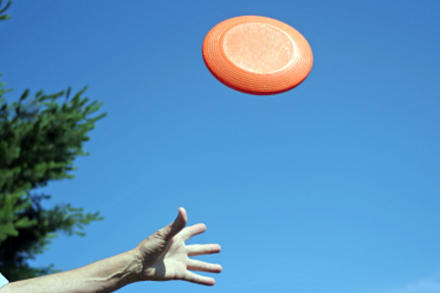

I have been involved with sports my whole life. I started playing sports when I was 5, I started when i was five and continued with that for a couple years until i was seven. As my passion for sports continued to grow I eventually moved onto football and that is my favorite sport to this day. I played football for fourteen years and once high school ended that was when my football career ended too. I played basketball for a couple years starting in Jr. high, but it never impacted me like football did. I still keep up with football and basketball, I watch the NFL and NBA every day possible and I never see that changing. I attend as many school sporting events, including frisbee, football, basketball, and soccer as I enjoy doing as much physical activity as possible.
